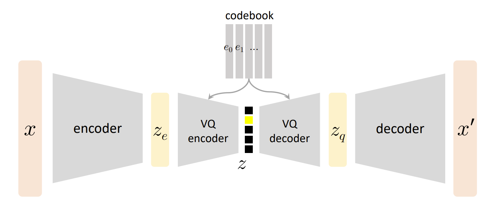

Paper Reading Notes 1: VQ-VAE
参考资料：VQ-VAE 论文 ， 苏神blog ，MIT 6.S978 课件
思考过程
思考过程
目前对读文献还是很不习惯，读了一个小时还是不知道在读什么，整体上会觉得很迷茫，很不安。
可能是思维太过于跳跃了，总想着一步到位，从整体上直接理解到细节，但是这个系统是很复杂的，强行这样去理解只会适得其反，让自己处于一种烦躁的状态中。
感觉更好的办法是，列出自己不熟悉、感觉不舒服的点在哪里。
例如对于 VQ-VAE ，粗读有了一点点了解之后，可以列出一些问题：
- 它要解决的问题：把数据转换为离散的码字
- 这个问题有什么用？
- 其他解决这个问题的方法有哪些？
- 这个方法好在哪里，为什么好？
- 模型的结构：encoder+量化+decoder
- 这个结构参照了 VAE，AE的概念是什么？VAE的概念是什么？（可以再回顾下 VAE、ELBO……）
- VQ 的概念是什么？
- loss 如何定义出来的？每一项的具体意义是什么？
- 反向梯度是如何处理的？
- 具体怎么实现？（又可以细分到若干个部分）
通过这样一步步细分问题、解答问题的方式，能有效地理解论文，降低低效、无效的思考。
核心思想
解决的问题
Learning useful discrete representations without supervision
模型结构
事实上，VQ-VAE 是一个 AE 而不是 VAE。
VAE 的 latent 是分布，而 AE 的 latent 是点。AE 的 encoder 直接将 映射成一个确定的向量 ，而 VAE 的 encoder 把 映射成一个分布 ，再通过随机采样求出 。
AE 的目标是学一个”压缩-重建“的映射，而 VAE 的目标是建模数据分布。
AE 不能可靠生成，而 VAE 能生成。

有以下两种 loss：
- reconstruction loss:
- regularization loss:
reconstruction loss
，但是反向传播的时候 VQ 包含 无法传递梯度，因此要使用 Straight-Through Estimator 的技巧，通过利用 设计损失函数，让梯度能够被反向传播：
此时：
- 前向传播：sg 中内容不变，即
- 反向传播：sg 中内容消失，即
regularization loss
论文中使用了
取 。
前半部分是让 尽量向 靠近，优化码本 (codebook loss)；后半部分让 向 靠近，优化 encoder (commitment loss)。
K-means
我们发现梯度下降更新码本的过程可以用 K-means 来代替，K-means 能够使得 尽量小，同时鼓励码本分散。
这样梯度下降只需要优化 encoder 和 decoder 即可，可以舍弃掉 这一项损失。
一些反思
-
Q: 为什么 无法反向传播梯度？比如 能不能直接传递到最小的 ？
A: 不能，因为 和 没有显性的关系，前者的含义是最小的 的下标 的变动会让 怎么变；后者的含义是 的变动会让 怎么变。这两者无法建立一个函数 使得 。